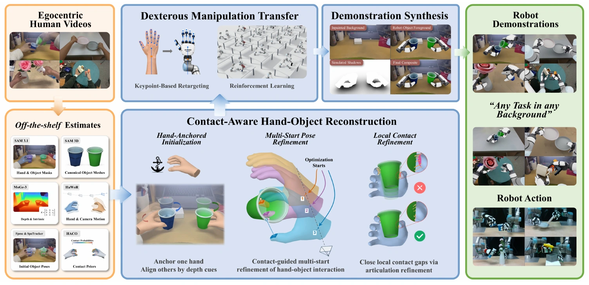

Ting Mao 毛挺
Hi! I'm a third-year undergraduate studying Robotics Engineering (Honors Program) at Zhejiang University.
I began my robotics research at SJTU ScaleLab, led by Prof. Yao Mu, in fall 2025, where I currently work as a research intern. I will also be joining Kinetix AI as a research intern in October 2026.
My current research interests lie in dexterous manipulation and agentic robotics, with a focus on building robotic systems capable of interacting with the physical world while achieving human-level dexterity.
Outside of research, I enjoy staying active, especially through rowing, running, and table tennis. I'm also a member of the ZJU Rowing Team. Apart from that, I also enjoy connecting with fellow robotics enthusiasts and previously served as president of the ZJU Student Robot Association (ZJUSRA).
I'd love to make new friends, so feel free to add me on WeChat!
Research Experience
ScaleLab
Shanghai Jiao Tong University
Publications
OmniHOI: Dexterous Hand-Object Interaction from Monocular Human Video
Turning monocular human videos into physically consistent dexterous robot trajectories for hand-object interaction.

EgoMatrix: Physically Faithful Dexterous Robot Demonstrations from Egocentric Human Videos
Converting monocular egocentric human videos into physically faithful bimanual dexterous robot trajectories and synchronized visual observations for training.
Selected Honors
- Zhejiang University First-Class Scholarship
- Zhejiang Provincial Government Scholarship
- Third Place, IDC RoboCon 2025
- Best Design, IDC RoboCon 2025